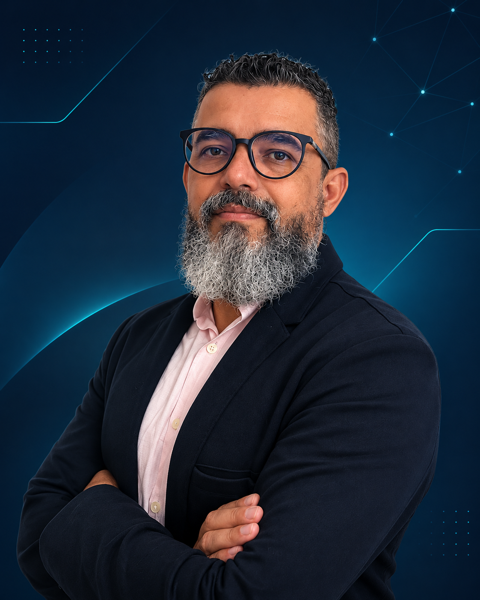

Análise de sistemas
O olhar para os sistemas e seu contexto funcional.
Análise · Implantação · Desenvolvimento
Fernando Silva — especialista em ERP TOTVS Protheus, análise de sistemas, implantação e desenvolvimento ADVPL/TLPP.

Sobre
Minha trajetória profissional começou na área de Planejamento e Controle da Produção (PCP), onde desenvolvi uma visão prática dos processos industriais, da gestão de recursos e da importância da informação para a tomada de decisões.
Essa experiência me levou ao universo dos sistemas de gestão empresarial, no qual construí uma carreira de 16 anos, incluindo 8 anos dedicados à consultoria e implantação de ERP, com especialização em TOTVS Protheus.
Ao longo dessa jornada, atuei em ambientes industriais, comerciais e de varejo, participando de implantações, parametrizações, sustentação de sistemas, análise de requisitos e melhoria de processos. Minha atuação combina o entendimento das necessidades do negócio com a capacidade de transformá-las em soluções tecnológicas.
Além da experiência funcional, desenvolvi sólida competência técnica em ADVPL/TLPP, SQL Server, Python e integrações entre sistemas, atuando na criação de customizações, automações e soluções que contribuem para a eficiência e a evolução dos processos corporativos.
Acredito que o valor da tecnologia está em sua capacidade de conectar pessoas, processos e informações. É essa visão que orienta meu trabalho: compreender o negócio, identificar oportunidades e desenvolver soluções que gerem resultados.
Atuação
O olhar para os sistemas e seu contexto funcional.
A implantação no ecossistema ERP TOTVS Protheus.
A construção de soluções em ADVPL e TLPP para o ambiente Protheus.
Competências
Competências aplicadas em projetos reais de ERP, desenvolvimento e governança.
Portfólio
ERP & Automação
Desenvolvimento de uma solução no TOTVS Protheus para automatizar a classificação de notas fiscais, validar regras tributárias e tratar divergências, reduzindo a intervenção manual no processo.
Ver estudo de caso